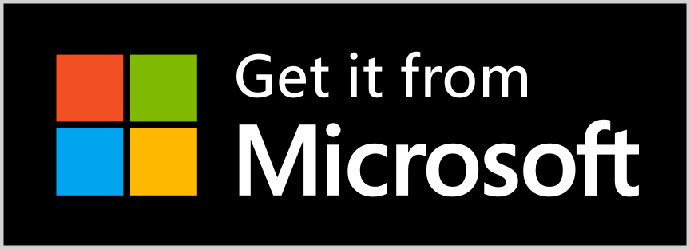
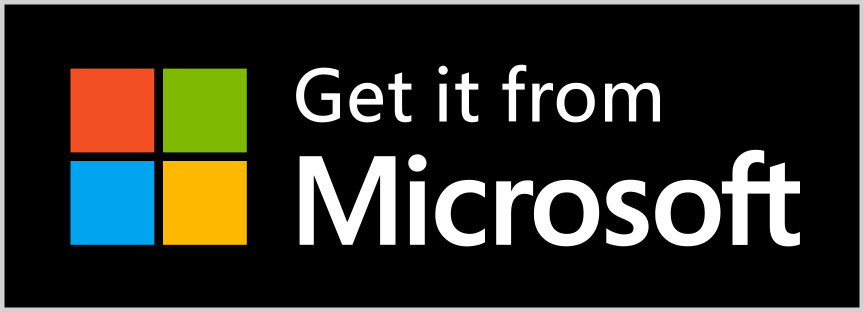

🚀 Key features: ✅ Translate selected text. Simply select the text and click the translate button. ✅ Auto-translate when editing the source text. ✅ Translate any text by writing or pasting from the clipboard. To do this, open a pop-up window using a keyboard shortcut or a button on the browser bar. ✅ All Google Translate languages are supported (over 100). ✅ Display dictionary, definition and examples when translating a single word or phrase. ✅ One-click reverse translation. ✅ Translation history. ✅ Quickly navigate through history. ✅ Copy original and translated text to the clipboard. ✅ Text voicing. ✅ Selecting a voice for text voicing (when available in the browser). ✅ Light and dark themes.